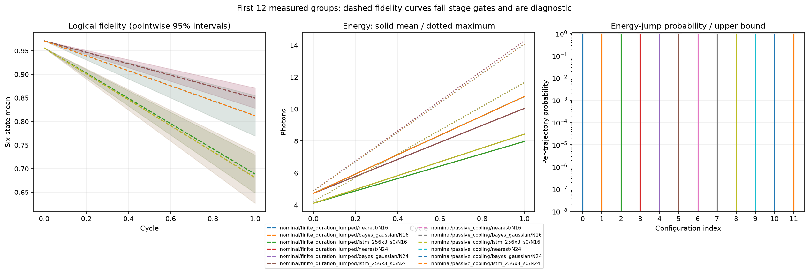

4/4 jobs executed. Classification: infrastructure_smoke. Numerical certification requires scoring, cutoff and independent-instrument checks in addition to stage gates.

Plots show up to12 measured groups; all groups are in JSON/CSV. Results after failed numerical gates are diagnostic. Intervals on incomplete groups are interim descriptions.
| Configuration | Chunks | Stage gates | Final mean fidelity |
|---|---|---|---|
| nominal/finite_duration_lumped/nearest/N16 | 1/1 | failed/pending | 68.8514% |
| nominal/finite_duration_lumped/bayes_gaussian/N16 | 1/1 | failed/pending | 68.8514% |
| nominal/finite_duration_lumped/lstm_256x3_s0/N16 | 1/1 | failed/pending | 68.8514% |
| nominal/finite_duration_lumped/nearest/N24 | 1/1 | failed/pending | 84.9687% |
| nominal/finite_duration_lumped/bayes_gaussian/N24 | 1/1 | failed/pending | 84.9687% |
| nominal/finite_duration_lumped/lstm_256x3_s0/N24 | 1/1 | failed/pending | 84.9687% |
| nominal/passive_cooling/nearest/N16 | 1/1 | failed/pending | 68.1090% |
| nominal/passive_cooling/bayes_gaussian/N16 | 1/1 | failed/pending | 68.1090% |
| nominal/passive_cooling/lstm_256x3_s0/N16 | 1/1 | failed/pending | 68.1090% |
| nominal/passive_cooling/nearest/N24 | 1/1 | failed/pending | 81.2300% |
| nominal/passive_cooling/bayes_gaussian/N24 | 1/1 | failed/pending | 81.2300% |
| nominal/passive_cooling/lstm_256x3_s0/N24 | 1/1 | failed/pending | 81.2300% |
Counts, fixed-budget intervals and completeness · Frozen plan